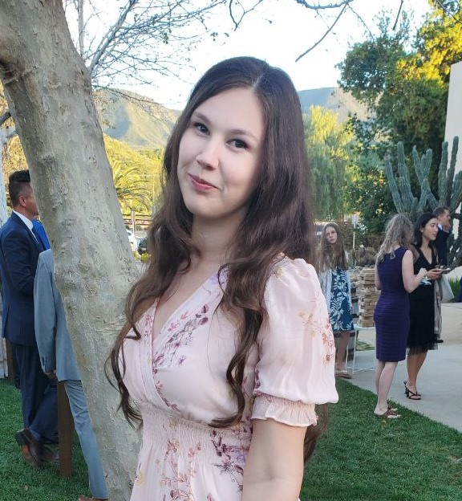

Projects below were done either in my internship, classes, or the non-profits I am involved in. Recent graduate, B.S. Computer Science with an emphasis on software development from California State University. Last work expirience was as a teaching assistant (TA) for classes: Introduction to Database Systems, Design & Analysis of Algorithms, and Introduction to Data Science. I really enjoy learning new things, and I am excited to continue gaining more experience.

Capstone Project: Gardening Web Application
For my final capstone project I was able to work with web technologies JSON, REST, and JavaScript. As a co-creator for the web application MyPlanner.garden, I made a Plant API for users to access our plant database, using their generated token. Working with a teammate on this project we were able use GitHub to put into practice the code review practices we learned in our Software Engineering class.
Final project from my Software Design class at CSUMB
The powerpoint below, which I made with Microsoft's PowerPoint, shows the application I made. This app is made to be able to share and find pets who need a home. Throughout the app there are pop-ups indicating success or indicating that more information is needed. I used a few recycler views for some of the lists as well as utilizing Android Studio's SQLite to keep and retrieve information of users, pets, requests, reports, and messages.
Final Project for Introduction to Data Science
This is the report for the final project in my data science class where we used data exploration techniques, created visualizations, and machine learning to predict the genre of songs given certain features.
Final Project for Introduction to Database Systems
This is the report for me and my teammate’s final project where we created a relational database for a pharmacy chain. This gave us great experience with entity-relationship model, spring-boot server, and Java for the backend.
Design and Analysis of Algorithms: Technical Program Assignment (Max) Heap
Written in C++ this program takes input array and commands like “deleteMax”, “input #”, and “display.” If array is not a max heap, it will transform it into one as well as preform the given commands.
Live Websites
Worked with two non-profits to help them get websites up and running. Utilizing different templates through WordPress to make updates and/or additions simple for future volunteers. Used CSS and HTML when necessary. Connected to PayPal and Stripe for donations.
Frontline Medics
Smiles for Seniors Foundation
This is the website Frequencies of Love-Destiny Lucas
During my web development internship, I updated the navigation bar, made the website html5 compliant, fixing spacing issues. I made picture of Destiny clickable everywhere and updated the format of the Contact page with more stylistic including Destiny's bio